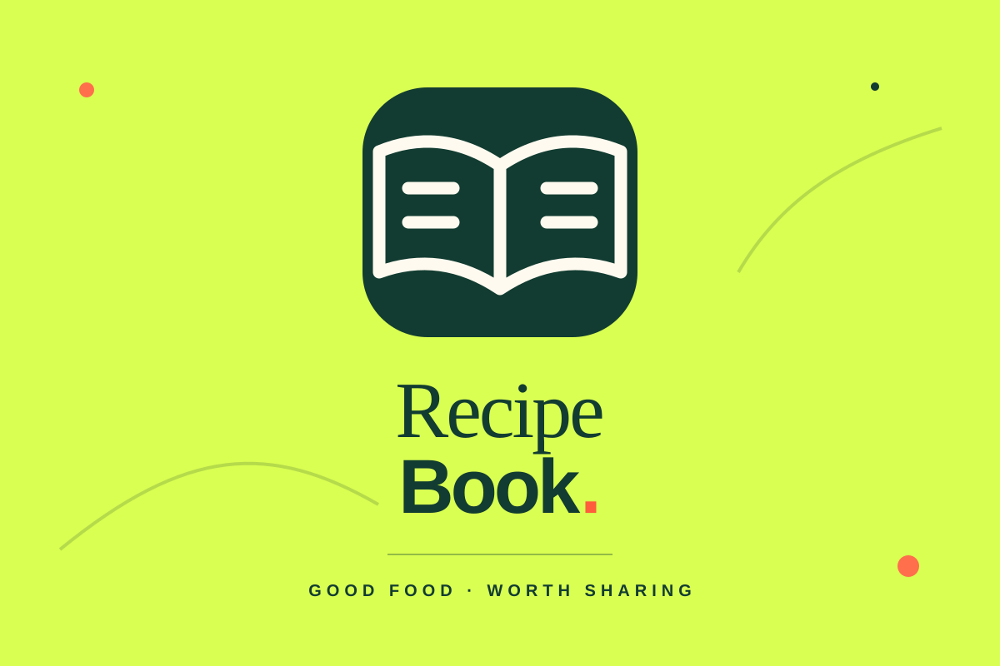

A PLACE AT THE TABLE
Good food.
Worth sharing.
Your next favorite meal starts here.
Find it, save it, make it your own.
Real recipes. Your kind of cooking.

FROM ONE KITCHEN TO ANOTHER
A fresh page of inspiration
Every recipe has a story. Find one you want to bring home.
Opening the recipe book…
EVERY GREAT BOOK STARTS SOMEWHERE
The first page is yours.
That dish everyone asks you to make? Start with that.
Share a recipe and give someone a new favorite.
Your own little cookbookSave favorites on this device.
See it. Cook it.Photos, videos & clear steps.
Less fuss. More flavor.Simple recipes, simply shared.